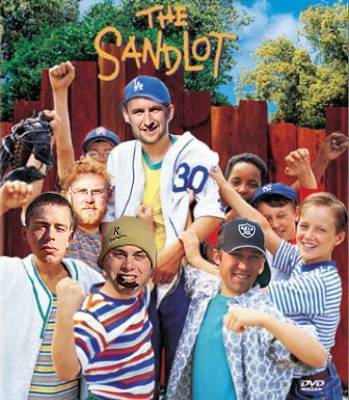
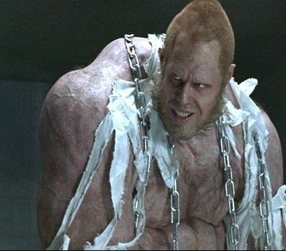
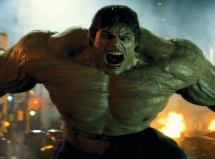
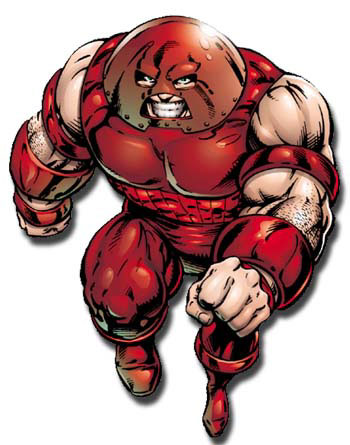

The Latest Headlines from
Cork Bowl 18
Cork Trying
to Get League Approval for Name Change
September 14 - On the heels of Bengals
wide receiver Chad Johnson's official name change to "Ocho Cinco",
Spider Monkey receiver Patrick Cork is attempting a similar move. Cork ,
who deemed himself "Ocho Siete" two years ago due to his long
use of the number 87 has requested permission to wear "Ocho Siete"
on the back of his jersey this year. "When you look at role models
in sports," stated Cork . "You start and end with guys like Chad
Ocho Cinco. At least you do when you're talking about Cork Bowl."
The similarities between Cork and
Johnson are seemingly endless. From the gold teeth and pink car, to racing against horses in the offeseason and now a similar interest in the spanish language, the two
seem like kindred spirits. "We are both 30 years old and we both like
to put on a show for the fans," stated Chad Johnson Ocho Cinco. "Patrick
has more touchdowns than me, but I have more catches. And I think I have
better celebrations, although he flat-out nailed the 'Walkin' the Dinosaur'
dance last year. He's been playing for 17 years, but he only gets one chance
each year to shine so it's hard to compare on pure numbers. It would be
nice if he could play for the Bengals because I can't pronounce the name
of the other receiver we have. It’s something like TJ Who'sYourMamma,
but I can never remember."
In order to get the name change approved
by the league, Cork will have to submit paperwork to the league office and
await the results of his petition. The final decision will be made by the
league commissioner. "That's good news, because....well...I am the
commissoner," added Cork/Ocho Siete. "I'm not sure what all this
red tape is about, but rules are rules."
Back to top
Spider Monkeys
vs. Pronghorns in Cork Bowl
September 22 - Cork Bowl 18 is gearing
up to be one of the most anticipated games in the long history of the storied
annual battle. Last year's game turned out to be a wild, high-scoring affair,
but a number of Cork Bowl legends were missing from the game. This year,
two of those greats will be back. Reggie (back injury) and Willy Truitt
(home purchase obligations) each missed last year's game. It was the first
time a Cork Bowl was played without the Truitt brothers since 1995. "The
Truitt brothers, without question, are two of the most accomplished players
in the history of Cork Bowl," remarked Commissioner Patrick Cork. "For
us to play without both of them was very odd. Something was definitely missing."
The Truitts will quarterback their
respective teams once again - much like they did the last time they played
in Cork Bowl 16. That game was won by Reggie's squad by a razor-thin score
of 126-119. Reggie will lead the Pronghorns into battle with one of the
most explosive receiving corps of his career. Joining Reggie on the Pronghorns
will be Greg Howard, Robert Trimble, Brooks Wilson, Jake Hoalt and Kevin
Ryan. Howard set a Cork Bowl record last year with 10 touchdown receptions
while Wilson has totaled at least 14 catches and 5 touchdowns in each of
the past five seasons. Trimble had back-to-back years with double-digit
reception totals heading into last year, but suffered an ankle injury in
the first half and missed most of the game. Kevin Ryan is coming off an
8-catch game just one year after posting his first-ever MVP season in Cork
Bowl 16 and Jake Hoalt had a career high 7 catches last year. "You
look at our team speed, and we've probably got the two fastest guys in the
game with Trimble and Greg," said Reggie. "We'll really be able
to stretch the field with those two and that will open things up for the
other guys underneath. We have the ability to score a lot of points, and
score them quickly."
Meanwhile, the league's all-time leading
passer, Willy Truitt, will have a group of experienced, cagey receivers
at his disposal. Truitt has the top two all-time reception leaders in Patrick
and Chris Cork, and the leading pass catcher over the past two seasons in
Jeff Henney. Henney has averaged 17 catches in his four career games, including
a career high 22 in 2006 with Willy as his quarterback. Josh Williamson
and second-year player Evan Woodard will round out the Spider Monkeys receiving
corps. Once a dominant tandem in the early years of the game, it will be
the first time since Cork Bowl 10 that Patrick Cork will have Willy Truitt
as his quarterback. Cork led his team in receptions each of four games that
Willy was the quarterback. "We had a connection like few other players
have been able to have," said Truitt. "It was like Montana and
Rice for a few years - we always knew what the other was thinking. We'll
see if we still have that after nearly a decade of not being together. That's
a long time away, but I think we'll be fine." Chris Cork is coming
off a shocking MVP performance last year - the first in his 17-year career.
Cork, who many believed was nearing an end to his storied career surprised
everyone with his 15 catch/7 touchdown performance. Cork hadn't had a game
nearing that since Cork Bowl 7. Williamson returned after missing three
years to put up his usual 10 catch/2 touchdown performance. The one question
mark is Evan Woodard who failed to have a catch in his first career game
last year. What the Spider Monkeys lack in speed and quickness, they hope
to make up for in veteran leadership. "We are full of guys that have
been through this routine a number of times," added Chris Cork. "We've
been told we are too old and too slow for 10 years, but we still find a
way to get it done." "They are definitely faster than we are,
so we'll have to get creative in finding ways to get guys open," added
Henney. "We know Willy is going to put the ball right where he wants
it, so we just need to create the opportunities for him to do just that."
Back to top
Hall of Fame
QB Willy Truitt Ready to Air it Out with Veteran Receiving Cast (by B.L.
Tomato--Moonshine Sentinel)
September 26 - Willy Truitt is ready
to get back on the field after a year away from the Cork Bowl scene. Truitt
had an ill-timed home purchase in the Fall of 2007, keeping him away from
the game he has dominated in the QB position for a decade.
He is salivating at the thought of
his receiving corps, some of the best the game has seen. Most tempting,
Truitt will concede is the chance to throw to Patrick Cork once again -
the duo were quite the show in the mid-90s, prompting the 1997 Cork Bowl
marketing campaign "Brothas from another Motha".
In most-recent history, Jeff Henney
has been the man Truitt looks to in clutch situations - and his reception
total with Truitt under center reflects such praise. They have hooked up
for 50 receptions and 15 touchdowns over three games together.
CB 18 will also give Truitt one more
shot at bringing the best out of Chris Cork. "Chris is the second leading
receiver in history, and for whatever reason, we've not had that QB-WR chemistry
on the field," offers Truitt.
"Looking back, I think it was
the generation gap - but I've now seen the light. I think I've just gotta
let the game come to Chris, and not force it on him. In past games I've
identified my go-to-guys early, and went with them for better or worse.
I'm going to give Chris all four quarters this year."
As for Josh Williamson, "look
out," says Truitt. "When he gets the ball in the open field, it's
like trying to bottle lightning. He was Greg Howard before Greg Howard was
Greg Howard. I'm not sure if that is a compliment or what, and I'm confused
how I just used Greg's name three times in a sentence, but the kid is quick
- that is the point."
As for the arm? "Just like old
times," gleams Truitt. That could spell disaster for the Pronghorns.
Back to top
Greg Howard
Continues to Baffle League with Negative Steroid Tests
October 6 - The face of Cork Bowl
for the past five years has been Greg Howard. After years of ups and downs,
Howard made "the leap" to stardom in Cork Bowl 13 with a 15 catch/5
touchdown/12 tackle performance that resulted in his first career MVP award.
Over the past five years, Howard has tallied at least 11 catches and 5 touchdowns
in each game except for an injury-riddled game in Cork Bowl 16 where he
suffered an ankle injury in the game. He has dominated defensively with
an astonishing 80 tackles in the past five years and now has two single-game
records to his credit: tackles (26) and touchdowns (10).
Despite the success on the field,
Howard has continued to be dogged by rumors of performance-enhancing drugs
off the field. "It doesn't take a doctor to look at him when he started
and look at him now and know something fishy is going on," remarked
an anonymous Cork Bowl player who used to wear a Flat Rock 2 jersey when
he played. "I was quite the physical specimen when I played, but even
I never had the guns that Greg has."
Howard is quick to point out he has
never failed a league-mandated drug test, despite being tested more times
than the rest of the players combined. "They keep saying the tests
are random, but I saw a list once and my name had about 75 check marks on
it and nobody else had any," said a frustrated Howard. "I'm not
bitter. I know I'm clean."
Howard has recently mocked the continued
league tests by injecting himself with some substance immediately before
his most recent test. "We were signing him in for the test and he told
us he had to do something really quick," stated the league drug-tester.
"He pulls a needle out of his pocket, sticks it in his rear and says,
'Now I'm ready.' And of course his test came back clean." "I was
just messing with them," said Howard. "I'm not dumb enough to
shoot up right in from of them - if I'm going to do that I'm going to do
it several weeks before I think they're going to test and make sure it's
the good stuff that they can't detect.....Not that I'd ever do it, but if
I would, that's how I'd do it."
Back to top
Patrick Cork
Attempting Rare Double
October 23 - Cork Bowl has long been
known as one of the most grueling sporting events in the world, and veteran
Patrick Cork will have a new perspective on just how grueling it is. Cork,
who has played in all 17 Cork Bowls will be running his first marathon (all
26.2 miles of it) on November 1 - just three weeks before Cork Bowl 18 will
be played. "When people ask about Cork Bowl I always tell them to picture
running a marathon, but having someone push you, knock you down or tackle
you every 30-60 seconds," commented Cork. "I guess I'll get to
see if that description was accurate after next weekend. I'm hoping nobody
tackles me every 60 seconds during the race though."
Although several Cork Bowl players
have competed in grueling endurance tests in the past (including marathons
and triathlons by players such as Greg Howard, Robert Trimble and Tony Cork),
nobody has ever competed in one of this magnitude this close to a Cork Bowl.
Trimble once ran the Louisville Marathon in 2004, but did not play in Cork
Bowl that year. "He said there was something else that prevented him
from playing, but I'm pretty sure he knew he couldn't handle both a month
apart," stated Cork. "We all know Trimble's not the toughest guy
out there so it's not much of a surprise."
Cork will have just three short weeks
to recover from the marathon before playing in his 18th Cork Bowl. "Now
that I think about it, maybe I should have picked a marathon a little earlier
in the year....." added Cork. "Three weeks is not much time to
recover, especially for something as grueling as Cork Bowl. I'm pretty sure
I only had about 3 or 4 fast-twitch muscles in my body before I started
training for the marathon and those are all long gone. You would think being
in marathon shape would help in Cork Bowl, but I'm unable to move faster
than 5 mph at a time now so I'm not sure how that helps. If we can run some
plays where I jog really slowly for an hour at a time I think we'd have
an advantage, but I don't think that's going to happen." Cork's marathon
training has inspired several of his Spider Monkey teammates....sort of.
"I think what he's doing is great," stated brother Chris Cork.
"And the best part about it is he's done so much running that he's
done enough training for half of our team so I haven't had to do anything
to prepare this year which is awesome."
Back to top
Henney Motivated
for What May be Last Cork Bowl
October 31- In just a few short years,
Jeff Henney has made a name for himself as impact player in Cork Bowl. And
this year's game, the fifth of his career, may be his last. Henney is likely
headed to the Far East to work in the mission field next summer, and he
is approaching Cork Bowl 18 as if it will be the last time he'll step foot
on the Corklestick turf. "It's going to be a very difficult day for
me and my family," responded an emotional Henney in Friday's press
conference. "Cork Bowl has become a part of who I am, and to be without
this game will be very hard."
Henney burst onto the scene as a rookie
in Cork Bowl 11 with 12 catches, 4 touchdowns and 3 interceptions - all
of which were returned for touchdowns. The effort earned him the coveted
MVP award, and he hasn't slowed down since. Henney has recorded 68 catches
and scored 20 touchdowns in his four career games, and also has 6 interceptions
(4 of them for touchdowns). "To say he's become an impact player would
be a gross understatement," said quarterback Willy Truitt. "Henney
is a star." "He has earned the respect of every player that steps
foot on that field," added Greg Howard. "He's been a great teammate
and a great leader."
Henney's career took a brief hiatus
after his second game in 2002 as he was away from the game for three seasons.
However, in the two years since he has returned, Henney has hauled in 40
passes and scored 8 touchdowns. But both games since his return have ended
in losses. "If this is in fact my last game, I have to go out on top,"
added Henney. "I'm 2-2 in my career and I'm going to do everything
in my power to make sure I'm over .500 when I leave this game."
Henney won't be the first Cork Bowl
player to see his career cut short. Steve "Colonel" Sanders played
in four Cork Bowls before heading to China after last year's game. (It is
unknown at this time if Henney and Sanders plan to start a Cork Bowl Far
East League). One of Cork Bowl's all-time great players, Kirby Newell had
his playing career come to a halt after a broken leg. Newell has returned
to play quarterback on two occasions since, but has not played a full game
since Cork Bowl 9. "I want to leave a legacy behind if and when I leave
Cork Bowl for good," said Henney. "You see guys that have been
around this game for half their lives like the Cork brothers and Truitt
brothers. People are going to remember them no matter what - I want that
too. Kirby is well known as a great player despite only playing 6 full seasons.
I'd like to think I could have the same kind of impact as a guy like Jim
Brown. The kind of career that will have people talking about 'what if he
had kept playing'. That's what I'm after, and I may only have one more chance
to make that happen."
Back to top
Willy Truitt
Expects Big Brother to Shine at Quarterback (by B.L. Tomato--Moonshine Sentinel)
NOvember 8 - For the second time in
three years, the Truitt brothers will lead their respective teams into Corkelstick
Park against one another in what is sure to epic battle between the Spider
Monkeys and the Pronghorns. 
Fitting Reggie Truitt's style, he
leads a team more reminiscent of 1993's 'The Sandlot' cast than flashy,
younger brother Willy's 'Friday Night Lights' lineup.
While Willy fully expects victory
for the Spider Monkeys in CB 18, he also believes Reggie will benefit from
the full-time Quarterback designation. "He's always tried to be everything,
a true all-in-one while out there in game situations. He was always mentally
dissecting the opposing offense, yet, half of the time he was on offense
himself," reflects Willy. "He's been one of the few multi-tool
players to play this game, and that said, I think it's hurt his personal
stats a bit. Had he focused on the QB position alone early in his career,
as I did, he'd have stats right there with mine, if not better."
Few will argue that point, and Willy
is glad he won't be on the opposing defense this year. "He covers more
ground laterally than anyone else, he'd pop out of nowhere and snag a interception.
Half of the time when I was on his team, I didn't know how he got to them
- or where he came from." Younger Truitt also remembers when Reggie
and Greg Howard were on the same team. "Greg's right up there with
Reg on getting to the ball carrier quickly and making the tackle. Those
two together on a defense can wreck havoc for an offense. I'm glad that
nucleus is broken up, even though Greg being the prima donna he is, never
liked how Reg used him on defense."
Reggie admits that he will miss the
physical side of the game, "I know I'll be itching to go in there and
crack some skulls, make some plays," says Truitt. "But, I'm on
strict doctors orders, so I'll put all of my energy and attention on leading
a explosive offensive attack."
As for the sandlot comparison, Reggie
likes it. "We'll be in good shape as long as Greg "Squints"
Howard keeps his head in the game and doesn't fake an injury to get Patrick's
wife to give him CPR."
Now that would surely get Howard on
the highlight reel, something he's been dying for since he stepped into
the Corkbowl scene.
Back to top
Tony Cork
to Announce Cork Bowl 18; Career in Question
NOvember 11 - If Cork Bowl 17 turns
out to be the final game of Tony Cork's career, he will without a doubt
have gone out on top. At the ripe old age of 59, Cork shattered the single-game
record for touchdown passes with 22 en route to a 166-133 victory. He was
razor sharp throwing the ball, completing 59 of 77 passes, including one
stretch where he was on target 30 out of 31 times. "It was one of the
most impressive throwing performances I've ever seen," remarked announcer
Eric Dean. "The defense was at his mercy all day. There really wasn't
any way to slow him down."
Cork's historic game put his career
numbers at 278 completions and a league best 66% completion percentage.
His 93 touchdowns rank second behind only Willy Truitt's 135, however Truitt
has played three more games than Cork at the quarterback position. Despite
the impressive showing last fall, Cork's career may be coming to an end...again.
In June, Cork had an unfortunate accident with a chainsaw that nearly ended
his career for sure. The injury to his right index finger required surgery,
and as Cork Bowl rosters were set later in the summer, Tony was unable to
commit to being 100% by game day.
"There was some doubt whether
he would play again anyway," stated Patrick Cork. "He loves to
play, but how much longer can he last? I know Mrs. Cork has been against
him playing since the first year he played." At the age of 60, Cork
will be announcing this year's game after retiring for either the fourth
or fifth time (the league has lost track). "I'm healthy and I could
play this year if they needed me," stated Tony. "I'm always ready
to play. I can still throw the ball. The finger is 100% and I don't expect
any residuals from the accident. We'll have to see how this year's game
goes and how many people will be around next year - I'll be ready if needed."
Back to top
Petition Circulating Asking for Howard's Dismissal
November 13 - Rumors within the Cork
Bowl ranks are swirling about a secret petition asking for Greg Howard to
be banned from the league. "I know nothing about any petition,"
stated a defensive Commissioner Patrick Cork. "And if I did, I sure
wouldn't tell you guys about it. We once had a petition going around to
get Tomlinson kicked out, but that was because he was so bad - not because
he was too good."
Despite Cork's dismissive remarks,
several anonymous Cork Bowl players have leaked some details about the petition.
"I can tell you it is true, and I can tell you I signed," said
one player. The exact contents of the petition have yet to be revealed,
but several players stated that Howard's superior physical fitness was the
focus of the complaints. "Just look at the guy," added one player.
"He's like some sort of mix between an ultimate fighter and a superhero.
He's been swimming, biking and running like crazy. He's got a sponsorship
with PowerBar for goodness sakes. Do you really think a guy in that good
of shape should be playing in the same game as Chris Cork?"
Howard recently competed in a half-marathon
race in Indianapolis and placed 7th out of over 1700 participants. Howard
finished in just under 1 hour 18 minutes - a pace of under six minutes per
mile. "Greg is an elite athlete and we are proud to have him in our
league," added Commissioner Cork. "Why would we want to get rid
of the face of our league?" Howard dominated Cork Bowl last year as
he was nearly unguardable at times en route to a record-setting 10 touchdown
receptions. However, his team was defeated by 30 points. "This game
isn't about one person," responded an obviously frustrated Howard.
"It's always been a team game and always will be. I'm just doing everything
in my power to win championships. If some of these old guys are too washed
up to care that's their problem, not mine."
The only page that was leaked to the
media was the final page which included several potential replacements to
Howard in the event he would be banned from the league. Here are the pictures
that were sent with a note saying, "You can't tell me these guys wouldn't
be less dominating than Greg":
  
Back to top
Kevin Ryan Injured; Questionable for Cork Bowl
NOvember 16 - The Pronghorns were hit with some bad news this weekend as Kevin Ryan revealed he may have fractured a bone in his foot recently. "I haven't gone to the doctor because I don't want him to tell me I can't play," stated a visibly upset Kevin Ryan. "I'm still going to play, but this will definitely be a hindrance to me on Saturday."
Details of how Ryan was injured were not released, however Ryan was seen visibly limping after leaving the team's practice facility on Saturday. "Kevin didn't practice with us this weekend, and he probably won't practice with us next week," stated quarterback Reggie Truitt. "He's definitely not moving the way we would like, but he's a gamer in every sense of the word and I think he'll find a way to play through the pain." Ryan's foot will hopefully hold up on Saturday, because the Pronghorns have no options if he is unable to complete the game. With Reggie Truitt strictly an offensive player, should Ryan be injured, they would be hard-pressed to find a replacement since Truitt cannot play defense due to an injured back. "I expect Kevin to play the whole game, but if he doesn't hopefully somebody will be there that can take his place," added Robert Trimble. "When I went down last year, David Ulrich appeared out of nowhere and filled in. Although he didn't put up big numbers in my place, he added another able body on defense. Hopefully we don't have to worry about it though."
Ryan has a history of bizarre instances leading up to Cork Bowl. Several years ago he injured his shoulder prior to the game, and about ten years ago Ryan was questionable because he thought he may have to make a court appearance due to failure to pay a traffic ticket. However, each time Ryan's status was in question he was able to suit up and play.
Back to top
Back
to Cork Bowl |